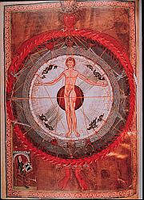

El hombre de la
Imago Mundi medieval, según
Honorio, según Fraile:
El hombre es un microcosmos, (»minor mundus dicitur»), compuesto de dos sustancias, una espiritual y otra corpórea. Consta de siete partes unidas armónicamente, cuatro corpóreas (elementos) y tres espirituales, que son las tres potencias del alma.
El cuerpo se compone de los cuatro elementos. Tiene carne, de la tierra; sangre, del agua; respiración (flatus), del aire, y calor, del fuego. Su cabeza es redonda, a manera de la esfera celeste. Tiene dos ojos, a semejanza de los dos luminares que brillan en el cielo. Y siete agujeros, a semejanza de los siete cielos.
Varios lectores me han hecho notar
que muchas de estas concepciones
provienen sobre todo de los griegos.
De los pitagóricos, por ejemplo,
la mística de los números; y luego
platónicos y neo-platónicos.
A su vez, veo, esto del hombre como microcosmos
era un lugar común en la escuela estoica:
el alma es al cuerpo lo que el logos es a la materia,
decían ellos.
Lindo. Copio de un apunte muy interesante que me pasan, y que acá viene justo (además, meter palabras en griego en el blog le da un toque intelectual-académico
que ni te digo).
La física estoica es materialista, monista y panteísta: al todo lo llaman Dios y tiene dos principios, la materia (pasiva) y el logos (activo) que informa la materia. El universo es una unidad en la que el todo y las partes se armonizan (es el principio de la ‘simpatía’ συμπάθεια universal) y la relación es la misma en el hombre, compuesto de cuerpo y alma (el hombre como microcosmos).
Y con respecto a la última frase de la cita de Honorio,
-que habrá hecho fruncir alguna que otra ceja-…
qué quieren que les diga. Ah, ya sé qué les diré.
Les diré que estos días estoy conociendo el
Bhagavad-Gita (algún amigo
que hubiera pasado por cierto restaurant un mediodía de la semana pasada, y me hubiera encontrado leyendo eso
y comiendo una ensalada por todo almuerzo habría
podido asustarse; no hay motivo, le garanto).
Y entre muchas cosas interesantes (algunas de ellas,
incluso, a propósito de lo del post anterior),
topé con esto (
cap 5, 12-13):
El hombre unido a Brahman obtiene
una paz duradera por el abandono
del fruto de la acción; sin Brahman,
es prisionero impulsado por el deseo
y esclavizado por la acción.
Renunciando con la mente a la acción,
el habitante del cuerpo que es dueño
de sí, descansa sereno en su ciudad
de nueve puertas, sin obrar,
y sin ser origen de ninguna acción.
La traductora tiene la gentileza de anotar
que «la ciudad de las nueve puertas» es el cuerpo
del hombre, con sus orificios. Supongo que
la diferencia con Honorio reside en que aquel
no cuenta a los ojos.
Por cierto, ambos coinciden en el
machismo
de la cuenta (je!).

{kind=link}